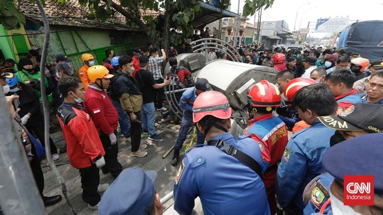
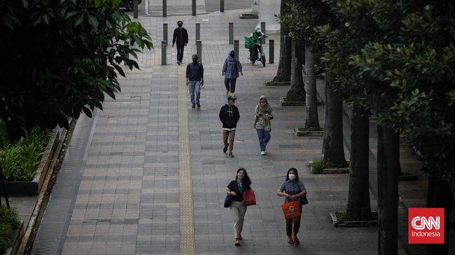
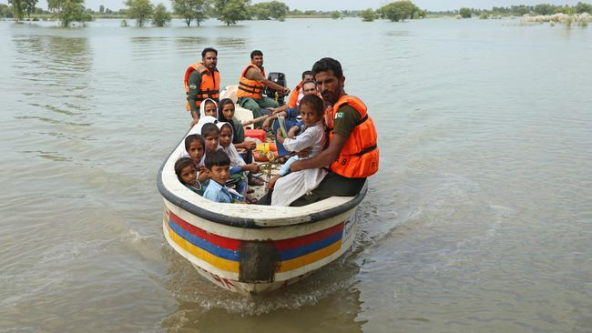

Berita Utama
FOTO: Potret Antrean Mengular di SPBU Jelang Harga Pertalite Naik
Antrean mengular terpampang di SPBU Pertamina jelang kenaikan harga BBM bersubsidi, Pertalite dan Solar.
Cerita Pedagang Tiba-tiba Koprol Hindari Kecelakaan Truk Maut Bekasi
Jakarta, CNN Indonesia -- Salah seorang korban selamat kecelakaan truk di depan SD Negeri Kota Baru II dan III, Kota Bekasi, Ali (49) menceritakan detik-detik insiden maut tersebut terjadi.
Ali mengaku tengah berjualan di depan sekolah tersebut. Ia sehari-hari menjual papeda. Ali melihat truk pembawa besi itu melaju dengan kecepatan tinggi di Jalan Sultan Agung
"Ngebut mobil, banget, tiang aja sampai roboh, kagak ada klakson," kata Ali saat dihubungi melalui panggilan video, Rabu (31/8).
Ali yang kebetulan melihat datangnya truk berusaha menghindar. Ia mengaku sempat koprol agar tubuhnya tidak terkena ban truk.
"Langsung saya ini apa, koprol gitu kan, nabrak temen saya, itu posisinya mobil di depan mata saya, langsung saya koprol," ujarnya.
Meski sempat menghindar, Ali masih terkena benturan. Selain itu, lengannya juga terkena minyak goreng dari dagangannya.
"Saya langsung menghindari. Kalau enggak ini saya mati tuh," katanya.
Setelahnya ia mengaku tidak ingat apa yang terjadi. Saat bangun, dirinya telah berada di RSUD Bekasi. Selain luka bakar di tangan, ia mengalami keluhan di bagian pinggang.
"Kondisinya masih sakit pinggang ini. Lukanya di sebelah kanan kiri yang sakit, pinggang pada sakit, enggak bisa bangun," ujarnya.
Dalam peristiwa ini, Kapolsek Bekasi Kota Kompol Salahuddin mengatakan truk trailer tak mengalami rem blong saat kecelakaan maut terjadi.
"Hasil penyelidikan sementara tidak ada rem blong. Kenapa? Setelah kami evakuasi, mobil kami hidupkan dan bisa dibawa tanpa terganggu rem," kata Salahuddin di lokasi kejadian, Bekasi, Rabu (31/8).
Pekerja Bergaji di Atas Rp3,5 Juta Ikut Terancam Jika Harga BBM Naik
Jakarta, CNN Indonesia -- Pemerintah akan memberikan bantuan langsung tunai (BLT) berupa subsidi gaji kepada pekerja dengan gaji di bawah Rp3,5 juta per bulan sebesar Rp600 ribu.
Bantuan itu diberikan kepada 16 juta pekerja untuk meredam dampak kenaikan harga BBM
Korban Tewas Banjir Pakistan Bertambah, Tembus 1.136 Orang
Jakarta, CNN Indonesia -- Jumlah korban meninggal dunia akibat banjir bandang di Pakistan tembus 1.136 orang sejak Juni lalu.
Angka korban meninggal juga diperkirakan akan terus bertambah lantaran semakin banyak desa yang terendam banjir tak lagi bisa terjangkau karena jalan utama rusak parah.